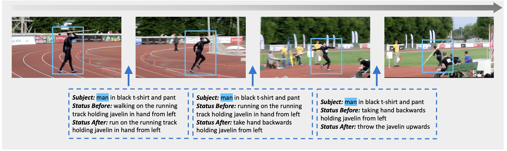

ECCV 2022 | [arXiv] | [PDF] | [Code]
Yuxuan Wang, Difei Gao, Licheng Yu, Stan Weixian Lei, Matt Feiszli, Mike Zheng Shou
Showlab, National University of Singapore and Meta AI
The Kinetics-GEB+ dataset consists of 170K boundaries with captions describing status changes in 12K videos. We propose three tasks: Boundary Captioning, Boundary Grounding, and Boundary Caption-Video Retrieval.
We provide both video frames and boundary annotations for ease of use.
Filtered boundaries (Recommended) (40K boundaries used in our paper and following works)
Download Filtered AnnotationsRaw Annotations (170K boundaries)
Download Raw AnnotationsDue to rapid advancements in video understanding, we recommend using only our dataset annotations and video frames.
Please refer to our Github repository for more details.
To train our Boundary Captioning model:
python run_captioning.py --do_train --do_test --do_eval --ablation obj --evaluate_during_training
To train our Boundary Grounding model:
python run_grounding.py --do_train --do_test --do_eval --ablation obj --evaluate_during_training
To train our Boundary Caption-Text Retrieval model:
python run_retrieval.py --do_train --do_test --do_eval --ablation obj --evaluate_during_training
If you find our work helps, please cite our paper:
@article{wang2022generic,
title={Generic Event Boundary Captioning: A Benchmark for Status Changes Understanding},
author={Wang, Yuxuan and Gao, Difei and Yu, Licheng and Lei, Stan Weixian and Feiszli, Matt and Shou, Mike Zheng},
journal={arXiv preprint arXiv:2204.00486},
year={2022}
}
Thanks to Difei Gao, Licheng Yu, and the great efforts contributed by other excellent staffs from Meta AI.
Thanks to the amazing YouTube artists for creating these videos and the contributors of the original Kinetics-400 dataset.
This project is supported by the National Research Foundation, Singapore under its NRFF Award NRF-NRFF13-2021-0008, and Mike Zheng Shou's Start-Up Grant from NUS. The computational work for this article was partially performed on resources of the National Supercomputing Centre, Singapore.